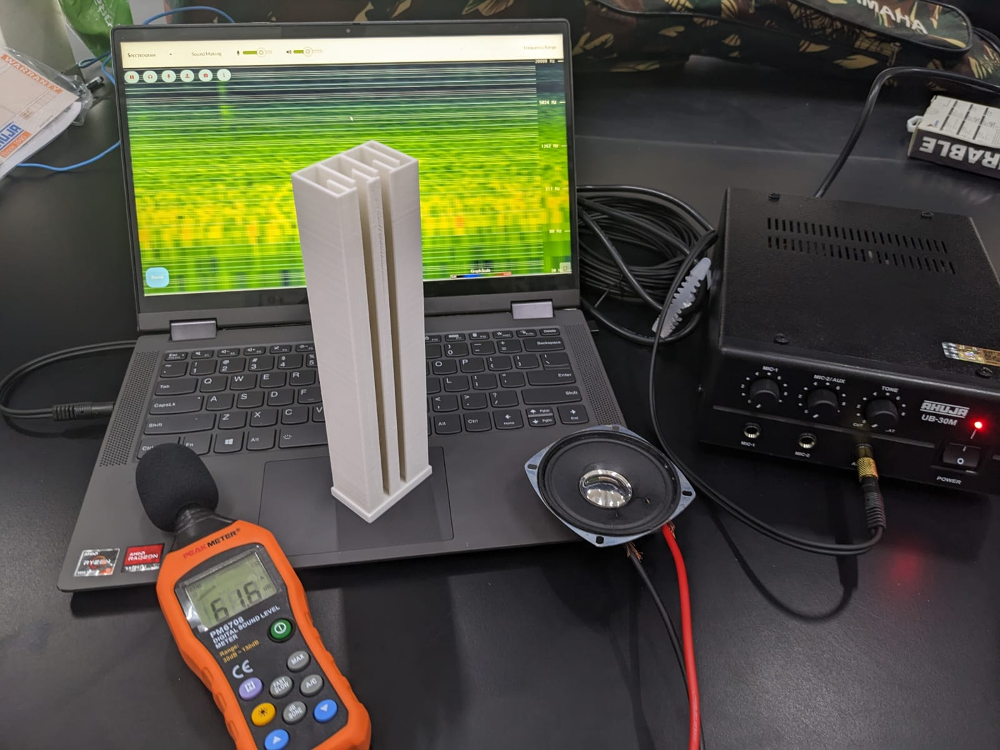

About the project I did at Central University of Punjab on Acoustic Metamaterials.
What are Acoustic Metamaterials?
Materials designed to control the transmission of sound waves
Composed of small, repeating structures that alter the path of sound waves
Result in unusual acoustic properties
The Project

A sonic crystal element can be seen, one of many identical structures that encompass the complete sonic crystal.
Objectives
Design and fabricate acoustic metamaterials that can control the propagation of sound waves in specific frequency ranges
Analyze the acoustic behavior of different materials and structures using computer simulations and experimental techniques
Frequency response of a sonic crystal lattice being tested.
Tools Used
Computer simulations using COMSOL Acoustics
Additive manufacturing of sonic crystals using 3-D printing
Hardware including SPL meter, Amplifiers, speakers and monitoring software.
Frequency response of a sonic crystal lattice being tested.
Collaborators
Dr. Prashant S Alegaonkar, Associate Professor of Physics, Central University of Punjab
Dr. Himangshu B Baskey, Scientist F, DRDO DMSRDE Kanpur
Dr. Shyamal Chinke, Assistant Professor of Electronic Science, Savitribai Phule Pune University
Sayantan Gantait, Graduate Student, Central University of Punjab
Major Results
Through our studies, we were able to create acoustic metamaterials that exhibited the desired acoustic properties. Specifically, we were able to control the propagation of sound waves in certain frequency ranges, and were able to develop sonic crystals capable of broadband sound suppression in the 1-8kHz range.
Conclusions
Our project was a fascinating exploration of the science of sound and the potential applications of acoustic metamaterials. By manipulating the properties of materials at a microscopic level, we can create structures that have unprecedented control over the transmission of sound waves. We believe that our findings have exciting implications for fields such as noise reduction and signal processing.